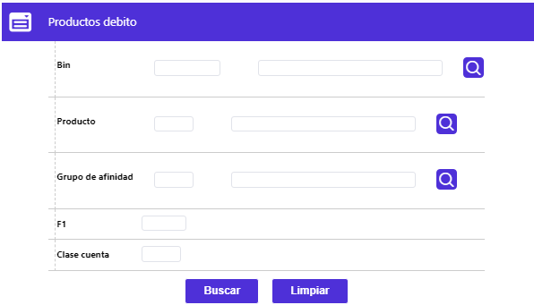

Homologación de productos débito
Desde este formulario, se se realiza la homologación de los diferentes productos débito propios de la entidad con los definidos internamente en BANKBU lo que permite asociar las características particulares definidas por otros sistema del banco para sus diferentes productos débito, con los productos manejados por BANKBU para que el sistema pueda interpretarlos. La aplicabilidad o funcionalidad de esta forma cobra importancia cuando la entidad ha definido sus productos por medio de un sistema diferente y desea empezar a utilizar BANKBU para el manejo y adiministración de los mismos, convirtiéndose la opción en una especie de Traductor de productos.
Al ingresar a la opción, el formulario inicial muestra lor productos débito definidos en BANKBU y que ya se encuentran homologados con los definidos en sistemas diferentes.

El formulario cuenta con las opciones Actualizar, Eliminar, Adicionar y Detalle.
Adicionar: si el usuario invoca la opción Adicionar se despliega un nuevo formulario con los siguientes campos.
Descripción de campos
Producto |
Campo obligatorio con lista de valores de la que se selecciona el producto débito que se va a homologar. |
Clase cuenta |
En este campo numérico de 2 dígitos, obligatorio, se registra la clase de cuenta que la entidad desea homologar con el producto seleccionado y que corresponde a una subclasificación de cada producto definido por la misma entidad lo que le confiere ciertas características especiales; a manera de ejemplo podríamos mencionar Electron maestro, Visa electron con cuota de manejo, Visa electron sin cuota de manejo, como clases de cuenta derivadas del Producto Electron. |
Tipo cuenta |
Campo obligatorio tipo combo en el cual se puede seleccionar entre Ahorros, Corriente o Rotativo el tipo de cuenta a homologar con el producto débito. |
Producto |
En este campo numérico de hasta 3 dígitos, obligatorio, se registra el código con el que la entida identifica su producto propio que desea homologar. |
Edad desde / hasta |
Campos obligatorios que permiten registar el rango de edades de los clientes a quienes va dirigido el producto que se desea homologar. |
Nómina |
En este campo obligatorio tipo combo se puede seleccionar entre Si o No el producto a homologar correponde a cuentas de nómina. |
Actualizar: si el usuario selecciona un registro e invoca la opción Actualizar se despliega un formulario en el cual el único campo NO modificable es el Producto.
Detalle: si el usuario selecciona un registro e invoca la opción Detalle se despliega un formulario con los datos completos del registro y en el cual ninguno de sus campos es modificable